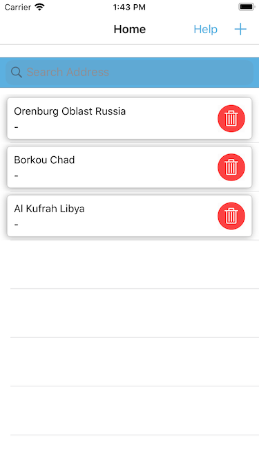
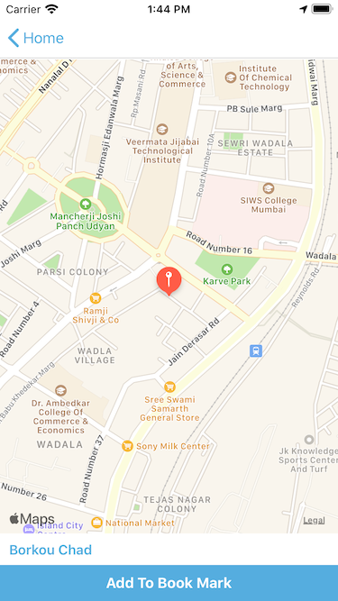
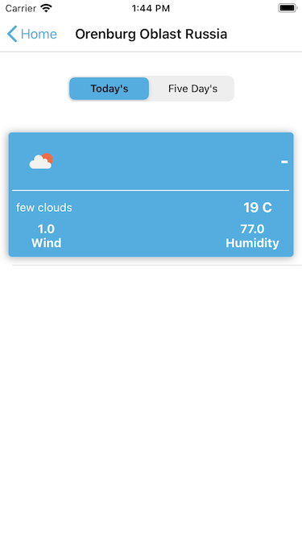
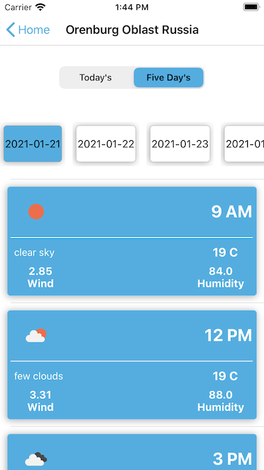

App Launch with Home Screen it shows Bookmarked location on click red icon it will delete location from app .
Click on + icon it will go to Map View
Click on bookmarked item it go's to Weather details View

On move on pin or map it will provide address on bottom of screen, then you can add it to Bookmarks by selecting Add to Book Mark

On selection of book mark it gives weather details screen with 2 option, You can see Today's and Five Day's weather details

